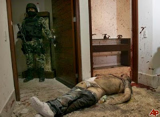

The time has come, insists Representative Michael McCaul (R-Texas), "for the U.S. to show serious commitment to war in our own backyard."
It's shamefully narrow-minded of Washington to confer the blessings of humanitarian mass murder on distant Bedouins while ignoring our Mestizo neighbors to the South. McCaul, a former federal prosecutor who now chairs the Homeland Security Subcommittee on Oversight, is eager to help rectify that inequity by designating six Mexican drug syndicates -- including Los Zetas, which is led by U.S.-trained military personnel -- as "foreign terrorist organizations."
This would permit deportation or prosecution of anyone providing "support" to the narcotics syndicates. Of course, this wouldn't apply to the public officials in the United States responsible for the huge narcotics price support program called the "War on Drugs."
| The War Down South: U.S.-funded Mexican paramilitary police. |

This would permit deportation or prosecution of anyone providing "support" to the narcotics syndicates. Of course, this wouldn't apply to the public officials in the United States responsible for the huge narcotics price support program called the "War on Drugs."
Over the past five years, an estimated 37,000 people have been killed as a result of the U.S.-funded war between the administration of Mexican President Felipe Calderon and various narcotics syndicates. Several months ago, Texas Governor Rick Perry suggested that Washington should invade Mexico for the supposed purpose of ending the violence. The only trivial impediment to that plan, Perry observed, is that Mexico's government would have to "approve" of the invasion.

As if to answer the question, "What kind of Latin American political figure would `approve' of a U.S. invasion and occupation of his country?" Colombian-born Washington Post columnist Edward Schumacher-Matos offered a very public endorsement of the proposal.
It's worth pointing out that between positions with the New York Times and the Wall Street Journal and his present gig at the Post, Schumacher-Matos taught a course at Harvard's David Rockefeller Center for Latin American studies, which is one of several academic nurseries in which the Establishment cultivates tomorrow's Quislings.
Schumacher-Matos piously chastises Mexico's political class for being "too proud to do what they immediately should: Call in the Marines." Only if Mexican somehow emerge from "their nationalistic stupor" will they see the light of reason and welcome the presence of their new overlords -- "American military specialists stationed within [their] borders to help the country build powerful electronic intelligence systems and train modern military and police forces to replace its suffocatingly hierarchical, outdated ones."
For the nonce, however, the huge and growing population of U.S. military and intelligence "advisers" infesting Mexico have to "play down" their role, in order "to avoid rubbing nationalist raw spots."
The division of labor used to maintain the fiction of Mexican independence was displayed in joint operations staged to murder Arturo Beltran-Leyva, the admittedly vicious head of a narcotics operation (an offshoot of the Sinaloa Cartel) he co-founded with his four brothers. On December 11, 2009, a team of U.S.-trained Mexican Special Forces operators, acting on intelligence gathered by their American "advisers," attacked a Christmas party, slaughtering several guests, wounding numerous others, and terrorizing scores more while Beltran-Leyva fled.
Several days later, U.S. agents tracked the fugitive to an apartment in Cuernavaca. This time 200 special forces troops laid siege to the building, surrounding it with tanks and helicopter gunships.
The outcome was predictable, and proudly memorialized in trophy photos of Beltran-Leyva's dead, mutilated body that were given wide circulation by the Mexican government.
This assassination was hailed as a significant "victory" in Washington's drug war in Mexico. Indeed, from the perspective of the people who manage that war, it was an ideal victory -- the kind that helps perpetuate the conflict, rather than bringing it to an end. As the AP points out, in the year following the killing of Beltran-Leyva, arrests of drug cartel leaders were up, cocaine seizures expanded, and extraditions of drug suspects to the U.S. increased -- "and yet, killings jumped to a record high ... and more heroin and marijuana are being produced in Mexico and smuggled into the U.S."
As with all other "successful" government programs, Washington's narco-war in Mexico is a breeder reactor for larger and even more profitable problems. The escalating violence by Washington and its puppet government in Mexico City is provoking retaliatory violence against American assets.
Washington's proxy war in Mexico has killed tens of thousands of Mexicans, as well as a small but growing number of U.S. citizens. What really prompted the ire of Rep. McCaul, however, was the murder last February of Immigration and Customs Enforcement Agent Jaime Zapata by a hit team employed by Los Zetas. This episode, in which a Federal Agent was assassinated by a cartel led by U.S.-trained Mexican paramilitaries that led McCaul to demand that Mexican drug syndicates be classified as "foreign terrorist organizations."
While Mexican President Calderon has “boldly declared war against the cartels," McCaul declares, "the Mexicans are losing the war – and so are we.”
Of course, the most effective way to destroy the criminal syndicates -- as a growing number of war-weary Mexicans understand -- would be to de-criminalize narcotics, which would mean an immediate end to the grotesquely inflated profits that sustain the cartels.
Schumacher-Matos piously chastises Mexico's political class for being "too proud to do what they immediately should: Call in the Marines." Only if Mexican somehow emerge from "their nationalistic stupor" will they see the light of reason and welcome the presence of their new overlords -- "American military specialists stationed within [their] borders to help the country build powerful electronic intelligence systems and train modern military and police forces to replace its suffocatingly hierarchical, outdated ones."
Although Mexico "is our neighbor and supposed longtime ally, the Mexican army has never -- never -- participated in a joint military exercise with the U.S. military," Schumacher-Matos points out, inviting us to sorrowful contemplation of the shame of it all. To substantiate the point, he cites a recent study by Roderic Ai Camp of the Woodrow Wilson Center, oblivious to the irony of mentioning Wilson's name in connection with proposed U.S. military intervention in Mexico.
"What is getting in the way of deeper cooperation with the U.S. military is that the Mexican military, political and intellectual leaders, abetted by U.S. intellectuals, still have their heads in the Mexican and American wars for the 19th century and the Cold War of the 20th," Schumacher-Matos scolds. "They talk of imperialism and hegemony -- which are irrelevant today."
This isn't "imperialism" that we're discussing, insists this Rockefeller-suckled sock puppet: It's applied humanitarianism of the kind that has turned places like Iraq, Afghanistan, Pakistan, Somalia, Kosovo, and Libya into havens of peace and prosperity.
This isn't "imperialism" that we're discussing, insists this Rockefeller-suckled sock puppet: It's applied humanitarianism of the kind that has turned places like Iraq, Afghanistan, Pakistan, Somalia, Kosovo, and Libya into havens of peace and prosperity.
Elements of Schumacher-Matos's prescription are a bit outdated. The "electronic intelligence systems" he describes are already operating in Mexico; huge amounts of money are being poured into training and equipping Mexican military and police; and U.S.-trained paramilitaries are actively involved in the Drug War -- on both sides of the conflict.
"The U.S. agents generally provide intelligence and training, while Mexicans do the hands-on work," explains a recent AP dispatch from Mexico City. Brad Barker, president of a "private" mercenary firm called HALO Corporation, told the AP: "Yes, we're tracking vehicles, yes, we're tracking people.... There's been a huge spike in agents down here."
For the nonce, however, the huge and growing population of U.S. military and intelligence "advisers" infesting Mexico have to "play down" their role, in order "to avoid rubbing nationalist raw spots."
The division of labor used to maintain the fiction of Mexican independence was displayed in joint operations staged to murder Arturo Beltran-Leyva, the admittedly vicious head of a narcotics operation (an offshoot of the Sinaloa Cartel) he co-founded with his four brothers. On December 11, 2009, a team of U.S.-trained Mexican Special Forces operators, acting on intelligence gathered by their American "advisers," attacked a Christmas party, slaughtering several guests, wounding numerous others, and terrorizing scores more while Beltran-Leyva fled.
 |
| Name the "good guy" in this photo. Yes, this is a trick question. |

The outcome was predictable, and proudly memorialized in trophy photos of Beltran-Leyva's dead, mutilated body that were given wide circulation by the Mexican government.
This assassination was hailed as a significant "victory" in Washington's drug war in Mexico. Indeed, from the perspective of the people who manage that war, it was an ideal victory -- the kind that helps perpetuate the conflict, rather than bringing it to an end. As the AP points out, in the year following the killing of Beltran-Leyva, arrests of drug cartel leaders were up, cocaine seizures expanded, and extraditions of drug suspects to the U.S. increased -- "and yet, killings jumped to a record high ... and more heroin and marijuana are being produced in Mexico and smuggled into the U.S."
As with all other "successful" government programs, Washington's narco-war in Mexico is a breeder reactor for larger and even more profitable problems. The escalating violence by Washington and its puppet government in Mexico City is provoking retaliatory violence against American assets.
Washington's proxy war in Mexico has killed tens of thousands of Mexicans, as well as a small but growing number of U.S. citizens. What really prompted the ire of Rep. McCaul, however, was the murder last February of Immigration and Customs Enforcement Agent Jaime Zapata by a hit team employed by Los Zetas. This episode, in which a Federal Agent was assassinated by a cartel led by U.S.-trained Mexican paramilitaries that led McCaul to demand that Mexican drug syndicates be classified as "foreign terrorist organizations."
| (Courtesy of Sipsey Street Irregulars.) |

Of course, the most effective way to destroy the criminal syndicates -- as a growing number of war-weary Mexicans understand -- would be to de-criminalize narcotics, which would mean an immediate end to the grotesquely inflated profits that sustain the cartels.
McCaul and his ilk, however, prefer to take the contrary approach -- continued escalation of the conflict with no imaginable end. "We can't afford a failed state in Mexico, and we must secure our borders," intones McCaul.
Let's briefly examine this familiar piece of thought-stopping boilerplate.
Since the housing bubble burst four years ago, immigration from Mexico is down dramatically. The chief threat to "border security" at present is the violence being churned up in Mexico through Washington's drug war. If the threat of "spillover" narcotics violence is the main problem, ending the drug war is the obvious solution -- yet ideologues like McCaul have a way of resisting the obvious.
For those who understand that the state is always and everywhere the chief enemy of liberty, prosperity, and peace, the term "failed state" is a pleonasm. When employed by spokesmen for the Imperial power elite, however, the term is invoked as a prelude to military intervention in order to impose a government-exercised monopoly on force -- which in practice has meant becoming local franchises of a U.S.-dominated global political system.
Interventions of this kind are justified as a form of preventive counter-terrorism. Accordingly, whenever U.S. politicians and policy-makers suggest that Mexico is in danger of becoming a "failed state," they are tuning the atmosphere for even more forceful intervention in that country's domestic affairs.
It shouldn't surprise us to learn that a growing number of Mexicans are weary of being on the receiving end of Washington's armed benevolence.
"We are fed up with this war that nobody asked for," exclaimed Ciudad Juarez resident Leticia Ruiz, one of thousands of Mexicans who attended protests on April 6 demanding an end to Washington's drug war in Mexico.
"We are fed up with this war that nobody asked for," exclaimed Ciudad Juarez resident Leticia Ruiz, one of thousands of Mexicans who attended protests on April 6 demanding an end to Washington's drug war in Mexico.
"We're sick of you politicians," declared Javier Sicilia, a noted Mexican author whose 24-year-old son was murdered by cartel hit-men. "In this badly planned, badly executed and badly led war, you have put the country into a state of emergency."
The horrors being visited on Mexicans in this unnecessary war are of little concern to the ruling elite on either side of the border. As Hillary Clinton admitted in a moment of stunning candor, de-criminalization of narcotics and de-escalation in the drug war simply aren't possible, because there is "too much money" to be made through prohibition. One illustration of this can be seen in the fact that when the global finance system went into cardiac arrest in 2008, laundered narcotics proceeds were the only liquid capital available for inter-bank loans.
Many law enforcement agencies in the United States have become addicted to drug war subsidies, both in the form of funds stolen and redistributed through taxation and in the form of direct highway robbery by way of "asset forfeiture." The Texas legislature has sought to expand that symbiosis between the criminal underworld and the even more disreputable political "overworld" by expanding the use of highway checkpoints -- for seatbelt enforcement, license and insurance inspections, and drug and weapons searches -- in order to harvest revenue to make up for shortfalls in tax revenue.
Significantly, Rep. McCaul points out that his proposal to designate drug cartels as "terrorist" organizations would "intensify southbound inspections to seize weapons and cash." In practice this would mean an escalation in Washington's unremitting war against privacy and private property.
Rep. McCaul himself illustrates another reason why there is no official interest in ending the drug war. As the Houston Chronicle points out, McCaul "unveiled [his] legislation as he raises his profile in Washington for a possible bid for statewide office" -- specifically, the Senate seat being vacated next year by Kay Bailey Hutchison. Being a dutiful drug war drone is a prescription for job security -- and in many cases, the key to a lucrative political career. Despite growing public disenchantment with this murderous charade, there is no political profit in working to bring it to an end.
Like other spokesmen for the War Party, Rep. McCaul has promoted a unified field theory of global conflict in which Mexico is emerging as a haven for Islamic terrorists bent on destroying the U.S. Although there's no evidence of an Islamist/Narco-terrorist alliance, undisguised U.S. military intervention in Mexico could conceivably provoke a nationalist backlash that would serve the War Party's propaganda needs nearly as well.
 |
| The Empire's Clone Army: Mexican narcotics troops. |
For decades, some elements of the Right (occasionally abetted by people who should have known better) have peddled the notion that Mexico has created a vast and well-organized "fifth column" within the United States dedicated to La Reconquista -- the re-conquest of territories seized by the U.S. during the Mexican-American War.
In this scenario, non-assimilated Mexicans by the millions join in a campaign of violence orchestrated by the Mexican government with the help of foundation-funded anti-American groups on this side of the border.
In this scenario, non-assimilated Mexicans by the millions join in a campaign of violence orchestrated by the Mexican government with the help of foundation-funded anti-American groups on this side of the border.
Whatever revanchist sentiments may exist in Mexico are the residue of Washington's seizure of roughly half the country through a war of aggression. Washington's proxy narco-war has done nothing to palliate those feelings. About the only thing that could vindicate the alarmist fantasy of a nationalistic uprising on the part of Mexicans living on the U.S. side of the border would be direct U.S. military intervention in Mexico. I'm just cynical enough to believe that this would be considered a selling point to the people who profit on the misery inflicted by Washington's drug wars, both here and abroad.
Thank you so much for helping to keep Pro Libertate on-line! God bless.
Dum spiro, pugno!
A quick note ....
My apologies, once again, for postponing the promised Maryanne Godboldo report. The delay reflects the unusual difficulties I'm having in contacting some of the key figures in this story. I appreciate your patience.
Thank you so much for helping to keep Pro Libertate on-line! God bless.
Dum spiro, pugno!
7 comments:
Yet another aspect is that the ATF along with a large quantity of alphabet agencies of the .gov have been caught suppling weapons to the Cartels. Check out David Codreas "war on guns" blog, and Mike Vanderboeghs "Sipsy Street Irregulars" and read about "Operation Gun Walker" and the coverup going on right now. The US govt has supplied thousands of guns directly to the cartels. Nice eh??
Tommy Atkins
The second photo, of the U.S.-funded Mexican paramilitary police, that to me was the very essence of the stereotype of a, "Mad Max" world.
People often talk about how things might go, "Mad Max" or will Never go, "Mad Max" but when I saw this photo I couldn't help but think, things Are Already, "Mad Max"
“Avoid the Use of the Word Intervention:” In 1916, Francisco Villa, leader of the peasant uprisings in northern Mexico, raided Columbus, New Mexico, in an attempt to expose Mexican government collaboration with the United States. President Woodrow Wilson responded by ordering an invasion of Mexico.
Shouldn’t that read “President Woodrow Wilson responded by minding his own business”? This is from the link in the post about “the irony of mentioning Wilson’s name in connection with proposed U.S. military intervention in Mexico.” “…many Mexicans did not welcome further involvement by the U.S. In the following correspondence, Secretary of State Robert Lansing and President Wilson described the need to carefully frame the invasion as a defense of U.S. borders rather than interference in the Mexican Revolution.”
Maybe it was Wilson’s business, as I also read that at the time, 27% of Mexico was owned by Americans. Let’s change the word “owned” to “exploited.”
It is certainly true that Mexico may be next. I have a list of the list (not complete, I’m sure, by any means) of the groups, races, and nations that at one time or other could be exterminated.
Of course, the Native Americans were first on the extermination list. “If you look through high school textbooks and elementary school textbooks in American history you will find Jackson the frontiersman, soldier, democrat, man of the people-not Jackson the slaveholder, land speculator, executioner of dissident soldiers, exterminator of Indians.”
The Mexicans: The American Review talked of Mexicans yielding to “a superior population, insensibly oozing into her territories, changing her customs, and out-living, out-trading, exterminating her weaker blood. . . .”
The Filipinos: “In November 1901, the Manila correspondent of the Philadelphia Ledger reported that “…our men have been relentless, have killed to exterminate men, women, children…”
White southerners during the civil war: July 12, 1862 – “…this Government is absolutely in earnest, and that as this rebellion is causeless it will be suppressed even at the cost of the extermination of the rebels…”
Black Southerners during the civil war: May 27,1865 – Andrew Johnson, in a speech delivered in Baltimore said that to save the Union he would be willing to sink the whole African race, which Harper’s Weekly interpreted to mean “He was willing either to exterminate them or to enfranchise them, as a means of conquering the rebellion.”
Suppose the entire country rebels against the u.s. govt when they can no longer afford food and are starving. The govt has two groups to deflect the anger of the masses; the Mexicans (“they come here illegally and steal your jobs, it is their fault!”) and the southerners (“they receive more tax money from the north and the north pays more taxes, and so it is their fault!”)
Are there any good books (preferably downloadable?) or articles online about Wilson’s non-intervention intervention during the Mexican Revolution? I didn’t come up with very much when I googled it.
I can't wait to read the articles on History Matters, but I'd like to read something specifically about the Mexican Revolution and the role the americans played it it.
Yosdarian, I expect that the ones the Feds would "put down" would be anyone and anywhere that "rebels" against its diktats whenever the time comes for the police-state to finally end its decades long charade of fooling the proles.
MoT, you’re exactly right – any American who thinks he is safe because he doesn’t belong to this or that group or this or that race or wasn’t born here or there – is deluding himself. What every American should do before spewing govt-created hatred for govt-created enemies is to put themselves in the shoes of those “enemies” because they, in fact, already wear those shoes. Is it because of foreign enemies or illegal aliens that we must stand practically naked and be thoroughly humiliated before we can board an airplane? Or that the police, the protectors and servants of the govt, can kill even babies with impunity?
The people that I mentioned who could be exterminated by the govt was not meant to exclude anyone, but was from a search I had done on who, explicitly, was used in the same sentence with the word “exterminate.” I’m sure a more thorough search would include the Germans and the Japanese and all other govt-created enemies.
I read in one of the anti-drug war blogs that this is HUGE news in Mexico and covered by all their newspapers. Has it been reported at all on TV news or in newspapers here? I use the TV mostly for background noise while I’m on the internet and remember a couple of weeks ago, I heard several – I guess you would call them “public service announcements” – on TV, about the “dangers” of marijuana, or some such nonsense. It was so irritating; I thought at the time “Are they STILL saying that? And why now so often?”
I wonder now if those PSAs were in response to thousands of Mexicans demanding an end to the u.s. imposed drug war?
I just did a search of my newspaper on “Cuernavaca.” Here is one story, Mexican gunmen tap bus passengers in mass killing.
Ninth paragraph: “More than four years and tens of thousand of troops into Mexico’s crackdown on drug trafficking, authorities say they have the cartels encircled. More than 34,600 people have died in drug violence. U.S. Drug Enforcement Administrator Michele Leonart told an international drug conference in Mexico’s resort city of Cancun this week that violence is an unfortunate sign that the offensive is successful.” (They break all restraint, With bloodshed upon bloodshed-somewhere in the OT & the u.s. motto)
Not until the 20th paragraph of this 24 paragraph story do we read: “The wave of drug-related killings drew thousands of protesters into the streets of Mexico’s capital and several other cities Wednesday in marches against violence.”
Post a Comment